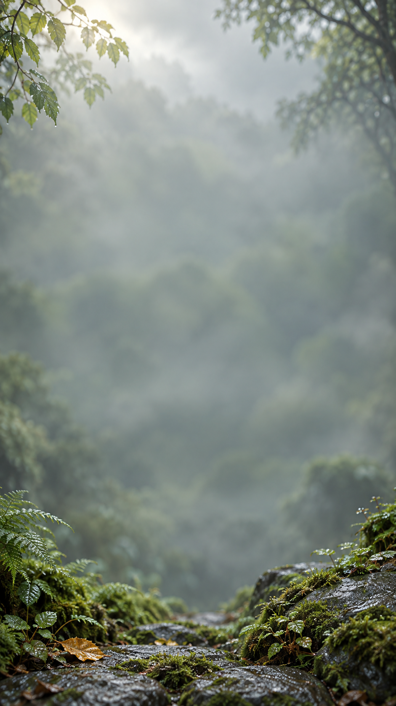
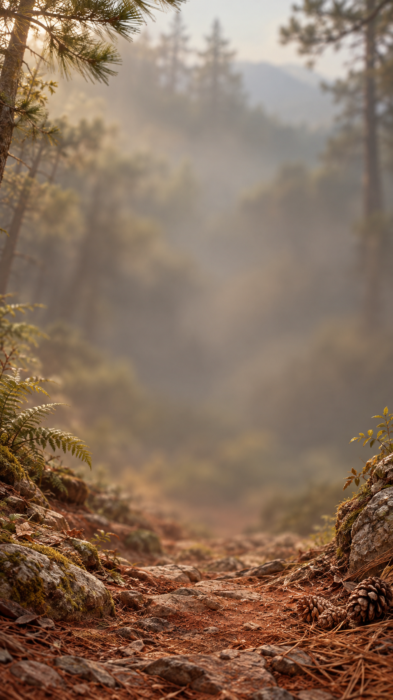

01 · 加载：山林晨光
完整环境镜头，下部菌子点景，上部留给标题。
下载原图 · 941 × 1672
02 · 主页：林间薄雾
浅色远景与中心留白，关卡和文字占主导。
下载原图 · 941 × 1672
03 · 局内：松林晨雾
柔和暖绿，作为主要局内背景方向。
下载原图 · 941 × 1672
04 · 局内：雨后青苔
冷灰绿变化，湿苔和水滴仅留在画面边缘。
下载原图 · 941 × 1672
05 · 局内：暖光红土
暖褐与橄榄绿，保留自然红土地表质感。
下载原图 · 940 × 1672